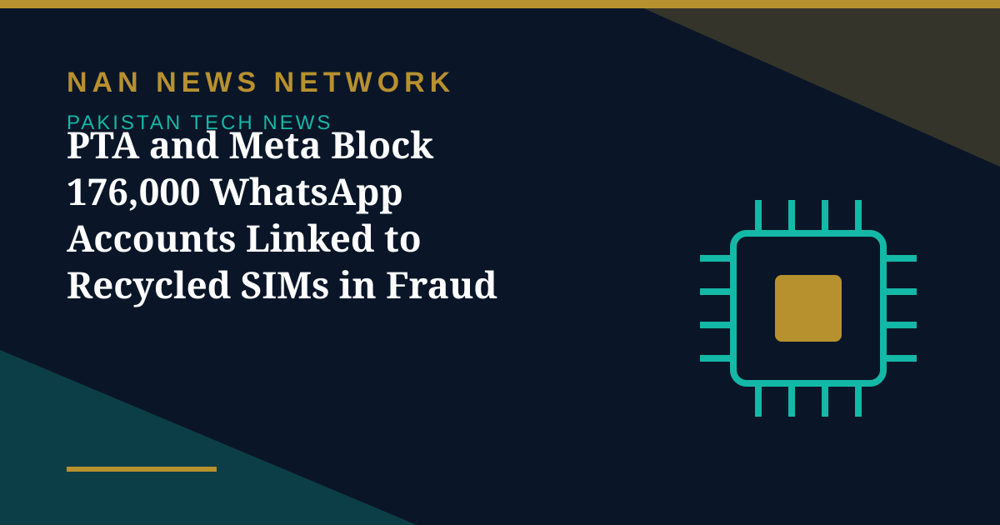

PTA and Meta Block 176,000 WhatsApp Accounts Linked to Recycled SIMs in Fraud Crackdown

The Pakistan Telecommunication Authority (PTA), in collaboration with Meta, has blocked 176,000 WhatsApp accounts registered against recycled mobile numbers, as the regulator moves to establish a permanent mechanism to prevent cyber fraud through inactive and cancelled SIMs, Business Recorder reported on November 6.
Why the accounts were blocked
PTA officials said the accounts had been blocked at the authority's request after complaints emerged that recycled mobile numbers were being exploited to commit cyber fraud through WhatsApp. Accounts registered on numbers that had been cancelled or deactivated remained active, and were used to target victims with impersonation and fraud. The action concerns accounts associated with recycled mobile numbers — it is not a general ban on WhatsApp users in Pakistan or a restriction on ordinary account activity.
A permanent mechanism
The authority has shared around 10 million recycled mobile numbers with Meta for verification and blocking of WhatsApp accounts associated with these numbers, while telecom operators collectively hold around 16 million recycled numbers. The regulator has also agreed on a permanent mechanism with Meta under which 5,000 recycled numbers will be shared with the platform every month to identify and deactivate associated accounts in phases. PTA officials also said Meta resolved 82 percent of the complaints received last year.
What it means for users
For ordinary subscribers, the crackdown is a reminder to keep their own numbers active and to be wary of messages from unfamiliar accounts. For the regulator, the monthly data-sharing arrangement turns a one-off sweep into an ongoing process — the test will be whether the phased blocking keeps pace with the millions of recycled numbers still in circulation.
Sources: Business Recorder, Dunya News, ProPakistani, November 6, 2026
More on Pakistan Tech News
- Pakistani Astronaut to Board Shenzhou-24 and Become First Foreigner on China's Space Station
- PTA Expands Network Quality Surveys to Lahore and Karachi After Twin Cities Checks
- Pakistan's Marketing Services Exports Rise 19% as Agencies Gather at Payoneer Connect Lahore
- Jazz Tops PTA Network Quality Survey in Islamabad and Rawalpindi
- Pakistan and Russia Explore Joint Technology Projects in AI, Cybersecurity and Quantum Computing
- Pakistan's 5G User Base Reaches 1.8 Million Across 24 Cities — but Lawmakers Question Service Quality
- Pakistan Weighs Arbitration Over $800 Million in Unpaid PTCL Privatisation Dues
- Pakistan Mobile Phone Production Falls 20% in September, but Local Assembly Still Meets 96% of Demand
- Pakistan's First Biomass Energy Plant Becomes Operational in Sajawal, Sindh
- AI Demand Lifts Global Trade Outlook to 3.9% — and Opens a Door for Pakistan
- MUET Students Win Accessibility Award at Alibaba Cloud AI Hackathon Pakistan 2026
- 1.5 Million Pakistani Children Faced Online Sexual Exploitation in a Year, UNICEF-Backed Study Finds
- Pakistan, OIC and D-8 Explore New Science, Technology and Research Cooperation
- Pakistan's Cyber Emergency Team Warns of Spyware That Can Infect Phones Through Online Ads
- Pakistan Climbs to 95th in Global Innovation Index 2026, Regaining 'Overperformer' Status
- Pakistan Launches New E-Passport With Chip, NFC and Biometric Security
- Pakistan Targets 50% Local Value Addition in Mobile Phone Manufacturing
- PTA Fines Mobile and Internet Firms Over Rs3.41 Billion Over Consumer Complaints
- PTA Warns of Rising 5G Security Risks as Cyber Alerts Top 10,000
- Pakistan Internet May Slow Until November 2 as AAE-1 Cable Undergoes Repairs
- PM Sets November Deadline for Alibaba-Backed AI and Digitalisation Projects
- Pakistan's 5G Now Reaches 24 Cities After $509 Million Spectrum Auction
- Pakistan Announces Urdu AI Model 'Buraq' to Keep National Data at Home
- PM Launches Two-Year Drive to Give 500,000 Chromebooks to Talented Students
- Pakistan to Host UN Space Technology Conference on Early Warnings and Climate Action
- PAK-US Tech Connect 2026 Takes 16 Pakistani Tech Firms Across America
- Pakistan Wins 11 Awards at the ASOCIO Digital and AI Awards 2026
- Pakistan Showcases AI Innovations at Abu Dhabi's AI Everything Global 2026